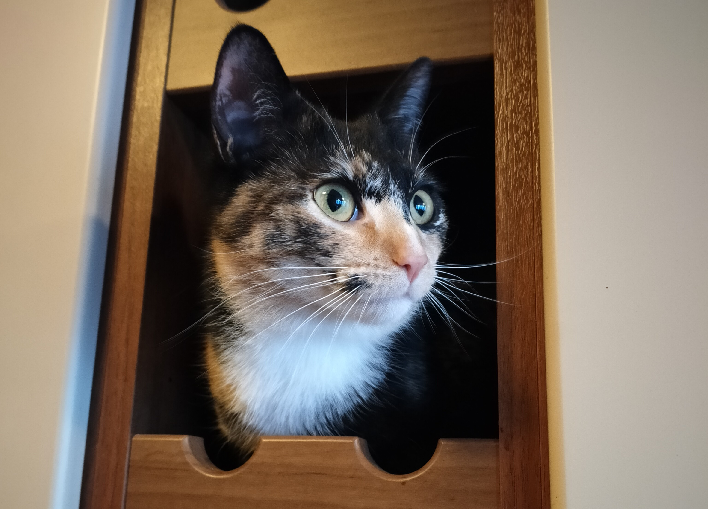
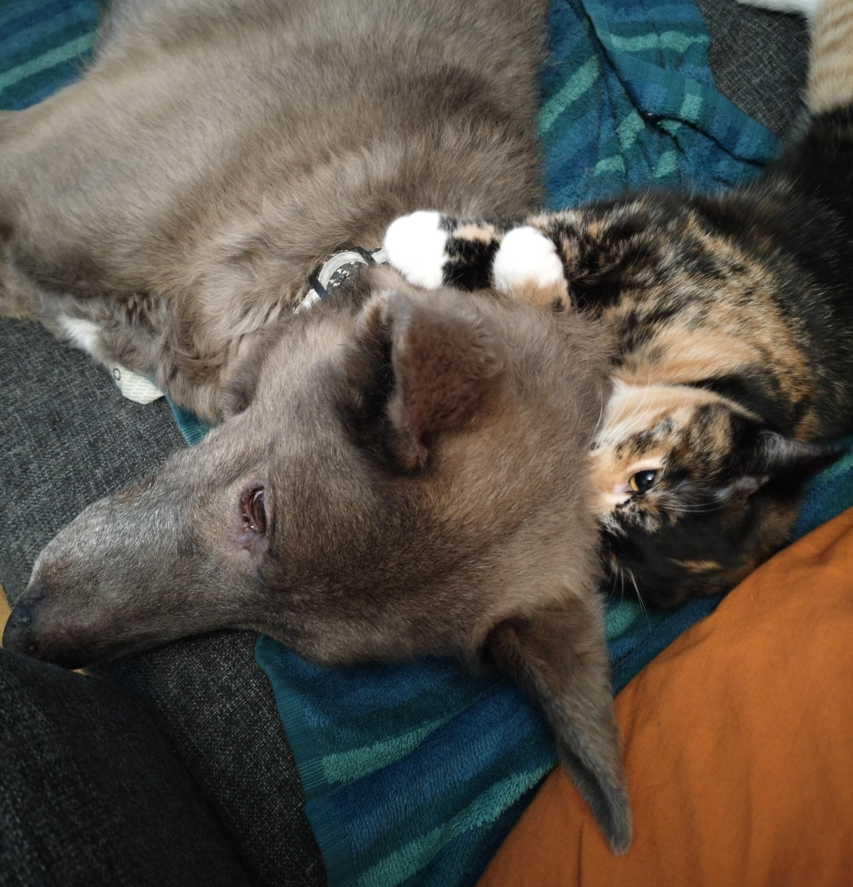
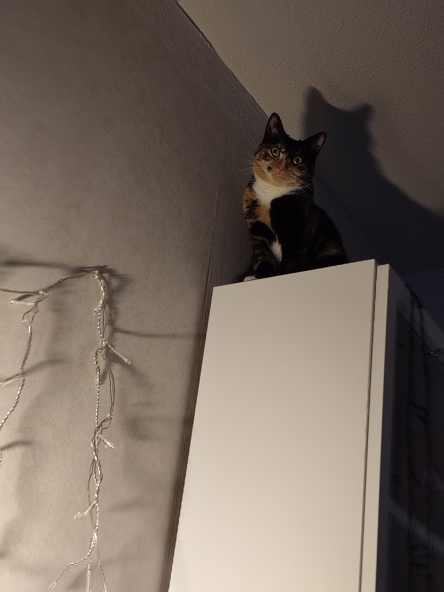
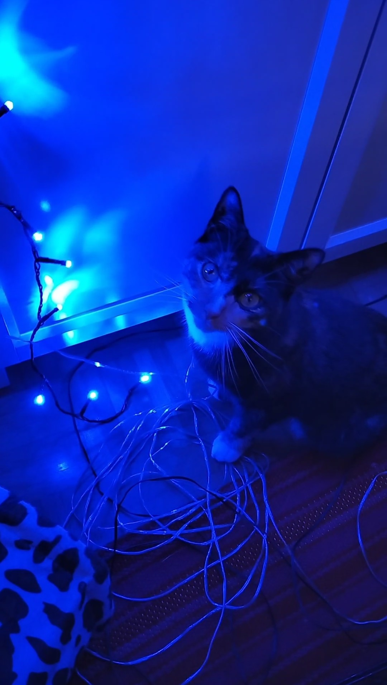
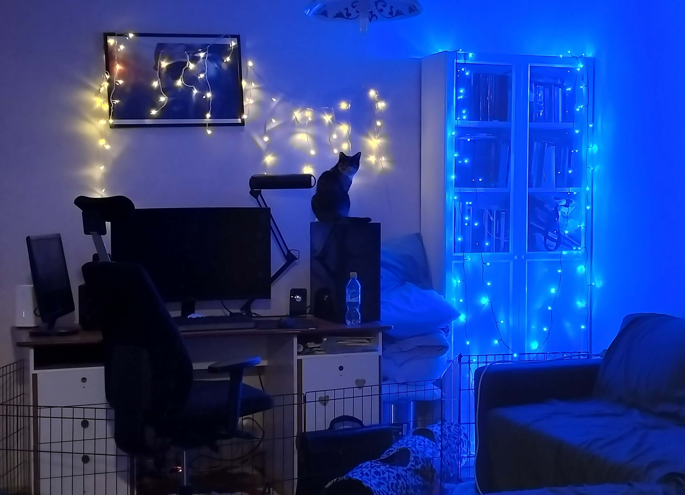

Muru
Muru is a 1,5 year old house cat. She is not one of those fancy breeds, just a cute little kitty. And I'm not joking about the 'little' part, for she's only a bit over 3kg.

When Muru arrived, my previous dog, Dora, was still alive and well, so Muru grew up with her. They got along well since Dora was so old and chill while Muru was creating chaos.

As far as pets go, Muru is an easy one. She doesn't have the tendency to break things or do her business where she isn't supposed to. She lets me cut her nails well and is fine with brushing. I am a little worried for the seasonal lights, though.

More than a little, to be honest.

It will be fine... right? Muru?

Distracting her with something else that moves might work. Here, Muru, look at the little spinner!